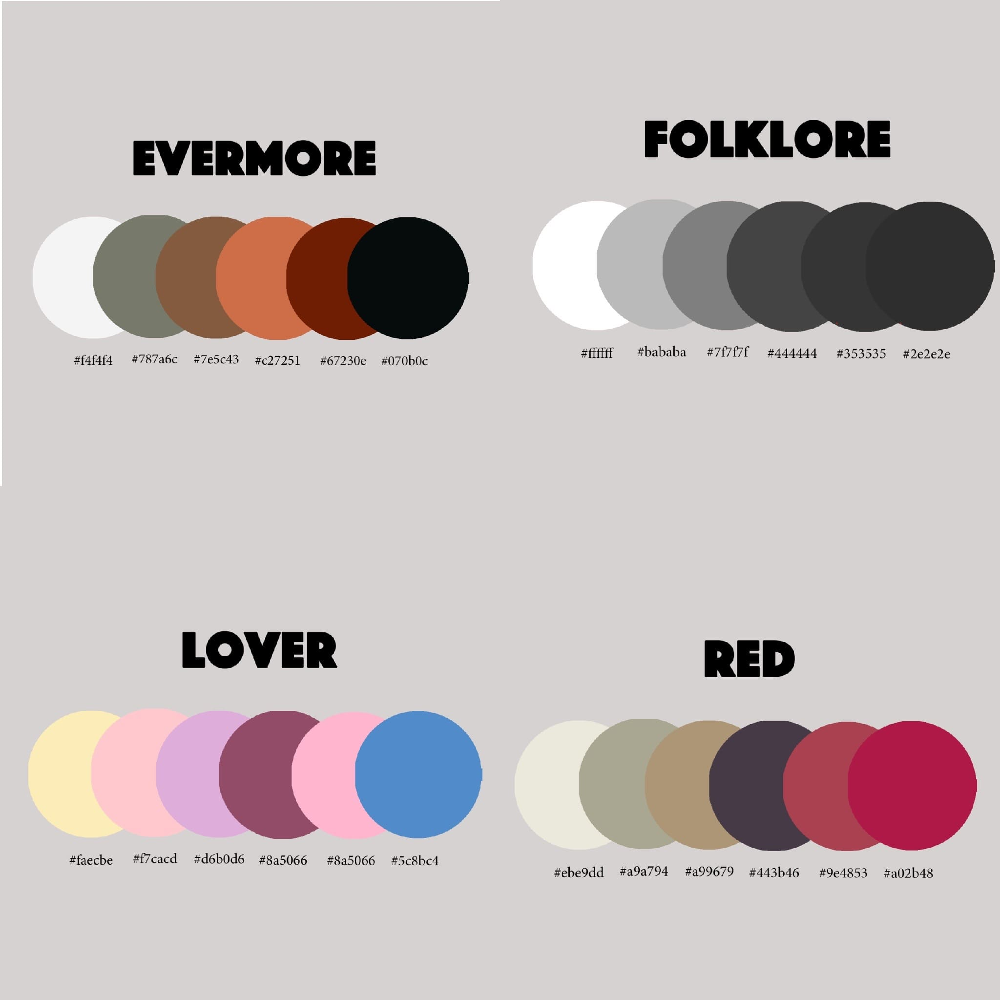
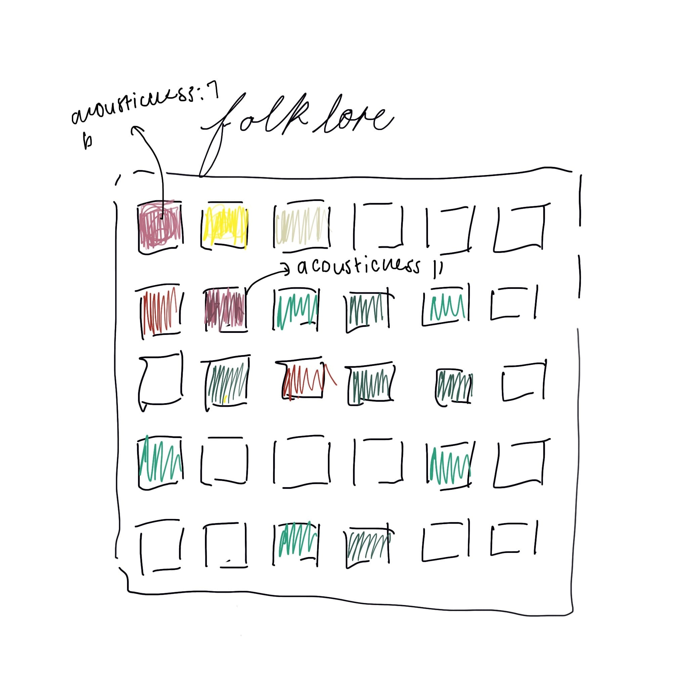

When creating data artwork it is important to understand the intention behind the data. I have found that working with data sets can often seem devoid of artistic expression. While data storytelling can focus on a literary narrative reminiscent of the original 3 part structure, for my data artwork, I have chosen to treat it as a visual piece. My intention behind my data art is to replicate the emotions within music in a visual form. My API for this semester has been largely music based and I believe that music has the ability to convey feelings in a short form effective manner - this is why many rely on music in such an intimate manner. The depiction of abstract emotion and sound is therefore what I strive to depict in my art across mediums. This has been the motivation behind the creation of my first artwork using quantitative data and my hopes to transform these numbers and values into a piece that embodies feeling.
Research
I have chosen to use the Spotify Web API for my site this semester. While the site offers a large amount of data, I have focused the site on one artist - Taylor Swift. The reason for making a website surrounding just one artist was due to a number of reasons - particularly the uses of data. Instead of creating different versions of personalized Spotify data analysis, I have chosen a musician who has a large catalogue of music, as well as well-established data sets regarding her discography. To better understand the Spotify Web API, the research I found that the API allows for insight into how Spotify ranks tracks popularity. The popularity index is based on a set of audio features that the Spotify algorithm uses to predict the success of a song. These audio features are easily accessed through the API yet Sciandra and Spera ( 2020, pp 216) question the use of this data in the application. Currently, the popularity metrics are based on these sound signals. The individual sound signals can be accessed for a track on Spotify and therefore pose an interesting opportunity for visualization as Spotify itself does not use this information currently for any other process apart from popularity tracking.
The use of the data in relation to a specific artist poses the question of the intended message. Alamalhodaei & Feigenbaun ( 2020, pp 37) highlight the importance of initially understanding your audience and therefore guiding the stories that you would like to tell. With Swifity, I have evidently created a niche site that targets the fan base of Taylor Swift and the understanding of the data behind her music. In previous assignments, I utilized the interest in charts and created visualizations regarding the popularity of her songs and albums. This, therefore, raised the question of 'what else would a fan like to see? ' therefore I decided to create a visualization of the audio features in her songs. The story that would be told with this artwork is creating an understanding of the emotions and feelings behind specific albums. Through experimentation with the endpoints on Spotify's developer dashboard, I quickly noticed trends in the data regarding the audio features of tracks on different albums. Taylor Swift, according to Perone ( 2017, pp 13) is known to create music based on periods in her life and events that defined these eras of her own life. This can be seen in her album 'Reputation ', which was released following controversy with rapper Kanye West which caused a downfall in her public popularity ( Arnold and Fogarty, 2020 pp4) where Spotify data shows tracks with higher loudness and energy metrics which coincide with the angry theme of the album. This is contrasted by the Spotify statics that shows higher metrics of instrumentals and lower tempo for her 2020 release of folklore, in which she has said to explore less biographical songwriting and a folk-indie genre. With the site being specified, the congruency between the change in lyrical style and message of Taylor Swift 's albums and the trends of audio signals lends itself to creating an interesting data visualization artwork.
Knaflic explains in the chapter in 'Storytelling with Data 'that visualizations should in some form show a narrative. The conceptual stance of my data art would be to reimagine the artwork originally created by Taylor Swift. Knaflic highlights the need for audience understanding. As previously discussed, the site is aimed at users who are familiar already with Swift 's body of work and therefore the information that they are gathering from the artwork itself would be in regard to what is being depicted. For this, showing a visual correlation with the original album will clarify details to the user and because I would like the initial entry point of the piece to be visual, descriptors and titles of the individual track will be hidden until the user hovers over aspects of the artwork.
Planning
For my data artwork, I explored the current applications of the Spotify Web API. Bars is a web application using web API and JavaScript to create visualizations regarding the audio analysis of individual tracks. This application inspired me to create a modification of this use of the API. The application allows users to search any track and display data based on the entire Spotify catalogue. This did not fit my site as I wanted to encapsulate Taylor Swift 's music. As mentioned before, I wanted to depict an audio analysis of an entire album. In regard to the display of the information, I found that a single visualisation that accounts for two static values did not seem adequate to depict the multiple audio features of multiple tracks. I explored the application of d3, specifically for visual art and found the use of d3 to create pixel art. The method by which this pixel art is created is by creating a grid and assigning specific colours to corresponding blocks on the grid. For my data artwork, I plan on assigning different colours for different audio qualities and then changing the saturation of the colour based on the Spotify value for the audio quality of the track. Attach below is an initial sketch of the proposed idea. This would mean that each column would be assigned a track and each row, an audio feature. At first glance, the user will see the colour chart alone and this acts as a standalone artwork. The mix of individual colours and tones to represent an entire album thus becomes a visual abstraction of Taylor Swift 's music.
In regard to the aesthetics of the artwork, I want the data artwork to be thematically congruent with the albums themselves. In order to achieve this, I have used an eye dropper tool in order to create specific colour palettes based on the album artwork. This creates a uniform feeling for each artwork and album. Knaflic highlights the importance of repetition for visualizations. This repetition will be deployed in the form of repeating colours in the artwork based on the specific audio feature. The frequency of the repeated colour therefore creates a pattern that the user is able to easily identify and therefore tells the story of the album.
